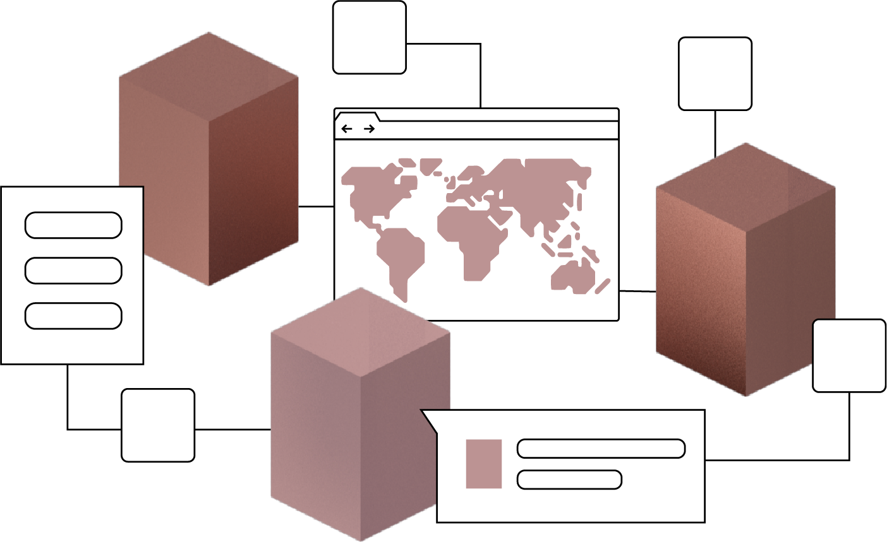

This is where all developer documentation is hosted.
If you are new to FOAM:
You can access a set of tutorials, sample applications and the reference for the REST API to the left.
Note that the FOAM API is currently in beta and it can be changed without notice.
These tutorials outline how you can get started using the FOAM API. It begins with a general overview and follows with detailed information on how to generate an API access token, how to use a CSC base contract. It also shows you the general outline of the architecture of FOAM.
Currently we have two sample applications. The CSC-Explorer is a simple react based application that you can fork and have display beacons and other CSC‘s using calls to the API.
The Parking DAO is meant as an example of a decentralized application that have spatially aware smart-contracts. This application is currently work-in-progress.
The easiest way to access our API is to use the Swagger generated docs. You can simply explore the API by calling its endpoints via your browser. We also host automatically generated client libraries that you can import into your application.